Suplemento S1. Datos y análisis exploratorio ampliado
Los análisis de este suplemento utilizan las mediciones de 2023 y amplían la construcción del escenario descrita en el capítulo 3. Se presentan la revisión de tipologías, los controles de calidad, el ajuste de la submuestra y los patrones temporales y espaciales de la demanda. La Sección S1.8 documenta también el requisito de disponibilidad de enero de 2024 utilizado para conformar la muestra. El tratamiento del faltante parcial de febrero se presenta en el Anexo A.
S1.1 Revisión de tipologías
La clasificación administrativa se complementó con una revisión de las curvas de carga para mantener el alcance residencial del ejercicio. En el grupo de hogares sin paneles identificados se examinaron 3.213 clientes del recorte geográfico. A partir de las mediciones de quince minutos se construyó, para cada cliente, un perfil medio de consumo a lo largo de las veinticuatro horas del día. Estos perfiles se estandarizaron utilizando la media y la desviación estándar de cada uno, para comparar su forma entre clientes con distintos niveles de consumo.
Los perfiles se agruparon mediante K-Means y se examinaron soluciones de dos a diez grupos. Aunque el índice silhouette alcanzó su mayor valor con dos grupos, la solución de cuatro permitió distinguir un perfil con actividad concentrada durante el día y un máximo próximo al mediodía (Figura S1.1). Este comportamiento contrastaba con el de los grupos cuya demanda aumentaba hacia la tarde o la noche. Los 480 clientes de ese grupo, cuyo comportamiento se consideró compatible con actividad comercial, se excluyeron al delimitar el conjunto residencial. Quedaron 2.733 clientes. Después de eliminar las duplicaciones con el grupo con paneles identificados y exigir registros completos durante 2023 y enero de 2024, se obtuvieron los 2.555 clientes elegibles para el muestreo descrito en la Sección 3.3.
Figura S1.1. Agrupamiento de los 3.213 clientes sin paneles identificados antes de la depuración.
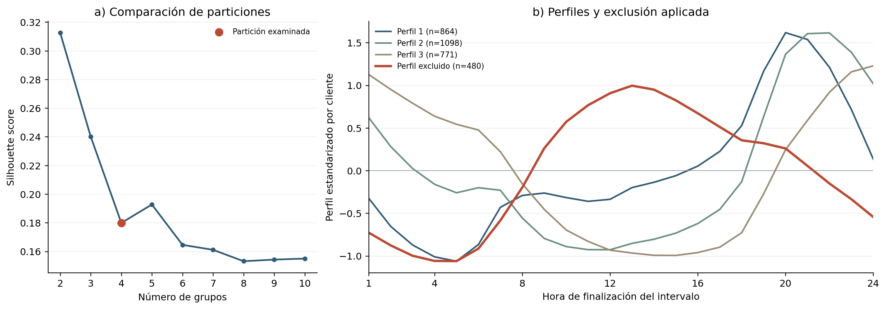
Nota. El panel izquierdo compara el índice silhouette para distintos números de grupos. El derecho presenta los centroides estandarizados de la partición de cuatro grupos utilizada para revisar las tipologías y destaca el grupo de 480 clientes excluidos. El eje horario identifica el final del intervalo; la hora 24 corresponde al cierre del día.
Fuente: elaboración propia con datos de JPS.
Los 226 clientes con paneles identificados se revisaron por separado. Para cada uno se construyeron dos perfiles medios de demanda neta con resolución de quince minutos: uno para días hábiles y otro para fines de semana. Los dos perfiles se estandarizaron conjuntamente para conservar las diferencias entre días hábiles y fines de semana, y se agruparon mediante K-Means en seis grupos. La revisión se concentró en el grupo con mayor aumento relativo de la demanda diurna durante los días hábiles. Dentro de él se identificaron los clientes cuya demanda neta media entre las 08:00 y las 17:00 descendía los fines de semana por debajo del 60 % del valor absoluto de la correspondiente a días hábiles.
Cinco clientes presentaron esta combinación de actividad diurna en días hábiles y menor demanda durante el fin de semana, compatible con actividades comerciales o institucionales, y fueron excluidos. La Figura S1.2 compara sus perfiles con los de los 221 clientes conservados tras esta revisión. De estos últimos, 204 cumplieron además el criterio de completitud de la Sección 3.7 y se incorporaron al escenario.
Figura S1.2. Perfiles de los clientes con paneles identificados tras la revisión de tipologías.
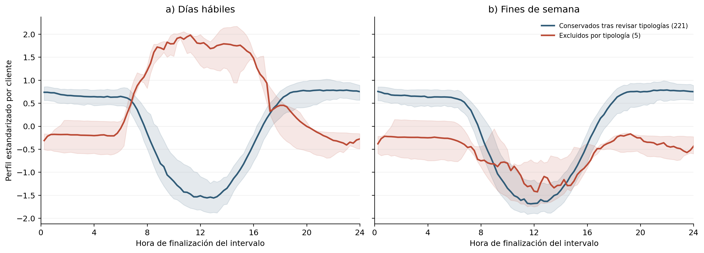
Nota. Se comparan los 221 clientes conservados en esta etapa con los cinco excluidos. Las líneas representan la mediana entre perfiles estandarizados por cliente y las bandas, los percentiles 25 y 75. Los perfiles conservan la resolución de quince minutos; el intervalo que termina a las 24:00 se asigna al día que finaliza.
Fuente: elaboración propia con datos de JPS.
Dentro del grupo de hogares sin paneles identificados también se observaron formas con una reducción diurna compatible con generación fotovoltaica. Esa semejanza no se consideró suficiente para identificar paneles ni para excluir clientes.
El agrupamiento orientó la revisión de las curvas de carga. La interpretación de los perfiles, junto con la información disponible sobre los clientes, fundamentó las exclusiones para mantener el alcance residencial del escenario.
S1.2 Controles de calidad de las mediciones
Los canales de importación y exportación se revisaron por separado antes de calcular su diferencia. Cada canal representa una cantidad de energía no negativa, mientras que el intercambio neto sí puede adoptar ambos signos. Se identificaron en 2023 ocho lecturas inválidas: cuatro exportaciones de 16,3835 kWh por intervalo, dos registros de −16,384 kWh y dos importaciones de −0,009 kWh. Los valores de mayor magnitud se reconocieron en la auditoría como valores centinela asociados con la codificación de los registros. Las ocho lecturas se sustituyeron por cero en sus canales originales. Este reemplazo es una decisión de tratamiento de registros inválidos; no permite conocer la energía que efectivamente se intercambió en esos intervalos.
La revisión estadística posterior consideró la recurrencia semanal de cada cliente. Por ejemplo, una lectura de un lunes a las 08:15 se comparó con las lecturas de ese mismo cliente en los restantes lunes a las 08:15. Sea la cantidad de energía neta del cliente en el intervalo de quince minutos , expresada en kWh, y sea la posición del intervalo dentro de las 672 posiciones de quince minutos que componen una semana. Para cada cliente y posición se calcularon el primer cuartil , la mediana y el tercer cuartil , con rango intercuartílico:
Algunos clientes presentan valores casi constantes en determinadas posiciones, lo que produce rangos intercuartílicos muy pequeños. Para evitar límites excesivamente estrechos se calculó también el rango intercuartílico de todos los residuos del cliente respecto de su mediana semanal:
El residuo es la lectura del cliente en el cuarto de hora menos la mediana correspondiente a su posición semanal . El vector reúne esos residuos y denota su cuantil de nivel . La escala efectiva y los límites inferior y superior utilizados fueron:
El operador selecciona el mayor de los dos rangos. Los límites y las escalas se expresan en kWh, mientras que es un múltiplo adimensional. Se examinaron valores de entre 1,5 y 8. Los límites basados en cuartiles, adaptados a la estacionalidad de cada cliente, se utilizaron para seleccionar lecturas que requerían inspección. La decisión de corregirlas se apoyó en su contexto temporal y en la plausibilidad física de la medición. Aunque el incremento aplicado a ambos extremos es el mismo, la posición de los cuartiles respecto de la mediana puede ser asimétrica.
La proporción de lecturas señaladas disminuye al aumentar , sin mostrar un punto de corte que separe claramente errores y comportamientos plausibles (Figura S1.3). Para distinguir episodios aislados de cambios persistentes se identificaron clientes con al menos siete días consecutivos en los que la mitad o más de los intervalos superaba los límites de 5 IQR efectivos. Diecisiete clientes cumplieron este criterio. Se utilizaron para organizar la revisión de períodos con otro nivel de actividad, sin atribuirles automáticamente un cambio estructural ni una causa específica.
Figura S1.3. Sensibilidad de la proporción de lecturas señaladas al múltiplo del IQR efectivo.
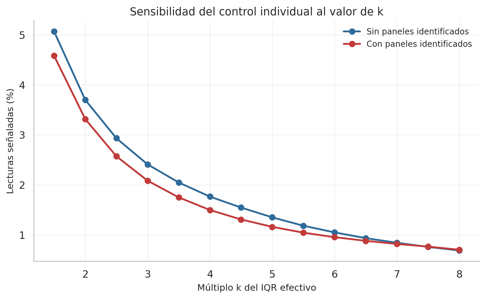
Nota. El denominador corresponde a los registros de cada grupo durante 2023.
Fuente: elaboración propia con datos de JPS.
La Figura S1.4 presenta ejemplos seleccionados por la severidad de sus desviaciones entre los clientes que no cumplieron el criterio de persistencia anterior. Para cada cliente se muestra el episodio junto con las dos semanas anteriores y posteriores, y una ampliación de las cuarenta y ocho horas que lo rodean. La vista extensa permite comparar el episodio con la actividad de las semanas próximas; el detalle conserva la visibilidad de las lecturas y de los límites de inspección. Los puntos rojos identifican todas las lecturas que superan los límites dentro de cada ventana. La inspección mostró picos y cambios de nivel compatibles con el comportamiento de los clientes, por lo que esas lecturas se conservaron.
Figura S1.4. Ejemplos de lecturas extremas conservadas, con contexto temporal.
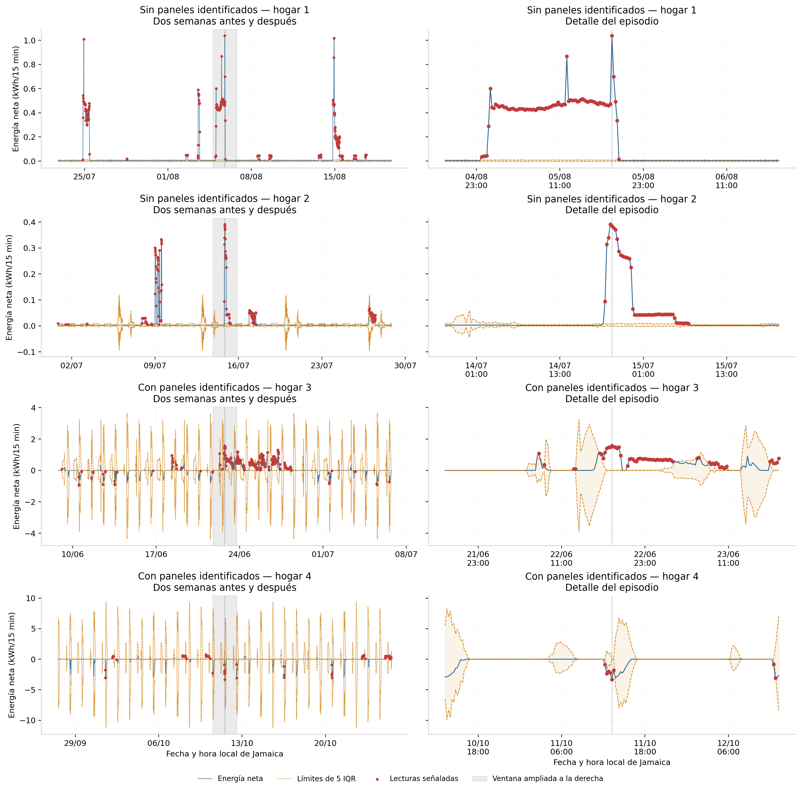
Nota. Cada fila corresponde a un hogar, identificado mediante una etiqueta anónima. A la izquierda se muestran dos semanas anteriores y posteriores al episodio; la zona sombreada identifica la ventana ampliada a la derecha. Se representan la energía neta por intervalo, los límites variables de 5 IQR efectivos y todas las lecturas que los exceden. Las dos vistas de cada cliente comparten la escala vertical.
Fuente: elaboración propia con datos de JPS.
Revisión de la demanda neta agregada
Como la variable objetivo es la demanda neta media horaria agregada, se realizó un control adicional sobre esa serie. Primero se calculó la mediana para cada una de las 168 posiciones horarias de la semana. Se restó ese patrón a la demanda y se estimó una tendencia sobre el remanente mediante una mediana móvil centrada de 28 días. La suma del patrón semanal y la tendencia proporciona una referencia robusta con la cual comparar cada hora.
Si es la demanda neta media en la hora , la mediana de su posición semanal y la mediana móvil del remanente, la referencia y su residuo son:
El índice recorre las horas, identifica la posición semanal, es la demanda de referencia y su diferencia respecto de la observación. El uso de una ventana centrada corresponde a una revisión retrospectiva de calidad. Esta referencia no se utiliza como pronóstico ni como entrada del modelo. Sobre la distribución de se calcularon límites globales y , donde y son los cuartiles primero y tercero de los residuos, su diferencia y el múltiplo de inspección. La demanda, la referencia, los residuos y los límites se expresan en kW.
Con se señalaron 681 horas; con , 144; con , nueve; y con , ninguna. Las nueve horas que excedieron los límites de 5 IQR ocurrieron durante horas solares y coincidieron con irradiancia baja en relación con la estimada bajo cielo despejado. La Figura S1.5 presenta la serie observada, la referencia robusta y la irradiancia para dos de esos episodios. La demanda neta permanece por encima de la referencia durante el mediodía, comportamiento compatible con una menor reducción de la demanda por generación fotovoltaica. La asociación meteorológica y la continuidad de las curvas sustentaron conservar esas observaciones, aunque no permiten descomponer sus causas entre consumo y generación.
Figura S1.5. Revisión de valores extremos de la demanda neta media horaria.
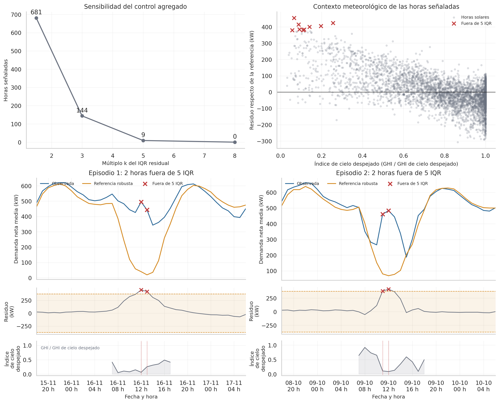
Nota. Arriba se muestran la sensibilidad al umbral y la relación del residuo con el cociente entre GHI y GHI de cielo despejado. Abajo se presentan dos episodios con la demanda, su referencia, el residuo y el contexto solar. Las cruces identifican todas las horas que exceden los límites de 5 IQR en cada ventana.
Fuente: elaboración propia con datos de JPS y NSRDB.
También se inspeccionaron las diferencias entre demandas medias de horas consecutivas. Para cada hora de finalización , se calcularon los cuartiles y de esas diferencias a lo largo de 2023. La escala utilizada fue:
Aquí es la escala de inspección para la hora , expresada en kW; el superíndice identifica las diferencias entre horas consecutivas. El índice recorre las veinticuatro horas del día e es el rango intercuartílico de todas las diferencias horarias del año. Los límites de inspección fueron y . Usar el mayor de los dos rangos evita que una dispersión local muy pequeña produzca límites excesivamente estrechos. Ninguna diferencia quedó fuera de ellos. El control agregado permitió conservar la serie resultante de la depuración individual.
Las ocho lecturas inválidas corregidas en la Sección 3.7 se concentraron en siete horas. Su reemplazo aumentó la energía neta anual en 65,552 kWh, equivalentes al 0,00193 % del total previo; el cambio máximo en una hora fue de 16,384 kWh. La corrección de estos registros tuvo, por tanto, una incidencia reducida sobre la magnitud anual del agregado.
Cuadro S1.1. Efecto de las correcciones sobre la energía neta agregada.
| Indicador | Resultado |
|---|---|
| Lecturas individuales corregidas | 8 |
| Valores horarios afectados | 7 |
| Cambio neto en la energía anual | 65,552 kWh |
| Cambio respecto de la energía neta anual previa | 0,00193 % |
| Mayor cambio absoluto en una hora | 16,384 kWh |
Fuente: elaboración propia con datos de JPS.
S1.3 Ajuste distribucional de la submuestra
El Cuadro 3.2 del capítulo 3 presenta los estadísticos del promedio mensual de energía importada de los 800 hogares seleccionados y los 2.555 elegibles. Cada observación representa la importación anual de un hogar dividida por doce. La distancia de Kolmogórov–Smirnov entre ambos conjuntos fue de 0,0088. Aquí se amplía la comparación con las distribuciones y el análisis de los valores de mayor importación.
Las medianas y los valores de MAD —la mediana de las desviaciones absolutas respecto de la mediana— son muy próximos, lo que indica una dispersión similar alrededor de la mediana de cada conjunto. La diferencia entre las desviaciones estándar se explica principalmente por tres clientes elegibles con promedios mensuales de importación entre 6.427,2 y 6.729,3 kWh, ausentes de la submuestra. En un cálculo diagnóstico, al excluir esos tres valores del conjunto elegible, su desviación estándar resulta de 345,5 kWh/mes, próxima a los 349,3 kWh/mes de la submuestra.
La distancia KS mide la máxima diferencia entre las proporciones acumuladas a lo largo de toda la distribución. Unos pocos valores extremos pueden producir una diferencia pequeña entre esas proporciones y, al mismo tiempo, elevar la desviación estándar, cuyo cálculo utiliza las desviaciones respecto de la media al cuadrado. Así, la proximidad de las distribuciones acumuladas y de la región central visible en la Figura S1.6 coexiste con diferencias en la cola de mayor importación.
Figura S1.6. Distribución del promedio mensual de energía importada por cliente.
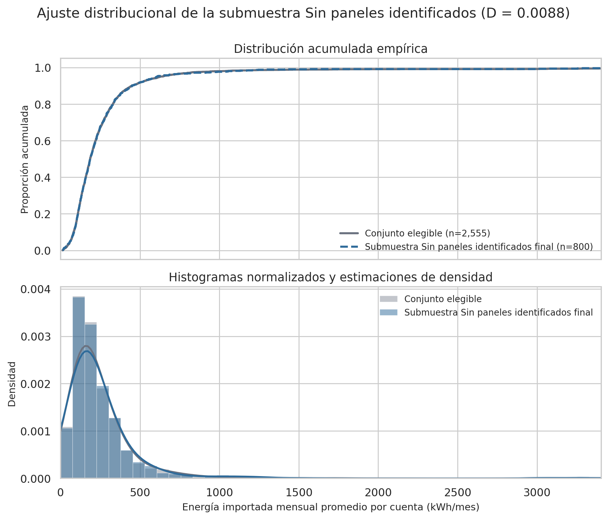
Nota. Se comparan el conjunto elegible y la submuestra de hogares sin paneles identificados mediante distribuciones acumuladas, histogramas y estimaciones de densidad. La vista se limita al percentil 99,5 de los valores combinados; la distancia y los estadísticos utilizan todos los valores.
Fuente: elaboración propia con datos de JPS.
Las distribuciones de importación y energía neta de ambos grupos y sus estadísticos se presentan en la Sección 3.9.2.
S1.4 Calendario y temperatura
El perfil diario cambia según el día de la semana. La Figura S1.7 distingue lunes a viernes, sábados y domingos. En este análisis, la expresión días hábiles identifica lunes a viernes por calendario, sin excluir feriados. Los tres perfiles conservan el valle diurno, pero difieren en su recuperación vespertina. El domingo presenta una recuperación más temprana y un nivel mayor en parte de la tarde; el sábado queda por debajo durante buena parte de la noche.
Figura S1.7. Demanda neta media según la hora y el tipo de día.
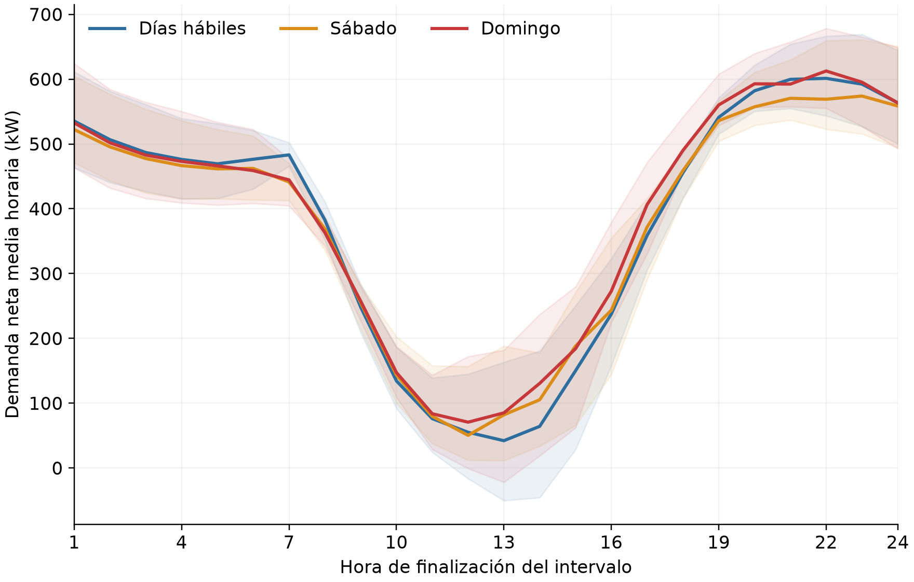
Nota. Las líneas representan medianas y las bandas rangos intercuartílicos de observaciones horarias.
Fuente: elaboración propia con datos de JPS.
Las comparaciones dentro de una misma semana muestran que las diferencias entre sábados, domingos y días hábiles cambian con el mes y la hora. La demanda también presenta separaciones distintas entre tipos de día dentro de rangos térmicos comunes. Esas observaciones motivan indicadores separados para sábado y domingo y sus interacciones con temperatura. Los gráficos de detalle están en el suplemento; su utilidad predictiva se evalúa mediante validación temporal.
Para examinar si esas diferencias permanecían constantes durante el año se calculó el promedio de los días hábiles de cada semana y hora. Esa referencia se restó al valor del sábado o domingo correspondiente. La comparación dentro de la misma semana reduce la influencia de cambios generales del nivel de la serie, aunque no iguala la meteorología de cada día.
Los mapas de calor de la Figura S1.8 muestran que las diferencias cambian con el mes y la hora. En las horas que finalizan a las 18 y 19, la mediana de la diferencia dominical fue positiva en todos los meses, pero con distinta magnitud; la del sábado alternó signos. Por ello, representar ambos días mediante un único indicador de fin de semana puede ocultar comportamientos diferentes.
La temperatura se presenta con el mismo eje mensual para situar las diferencias entre tipos de día en su contexto estacional. Su evolución coincide con otros cambios de comportamiento durante el año, por lo que estas asociaciones se interpretan conjuntamente con el calendario.
Figura S1.8. Diferencias de sábados y domingos respecto de los días hábiles de la misma semana y hora.
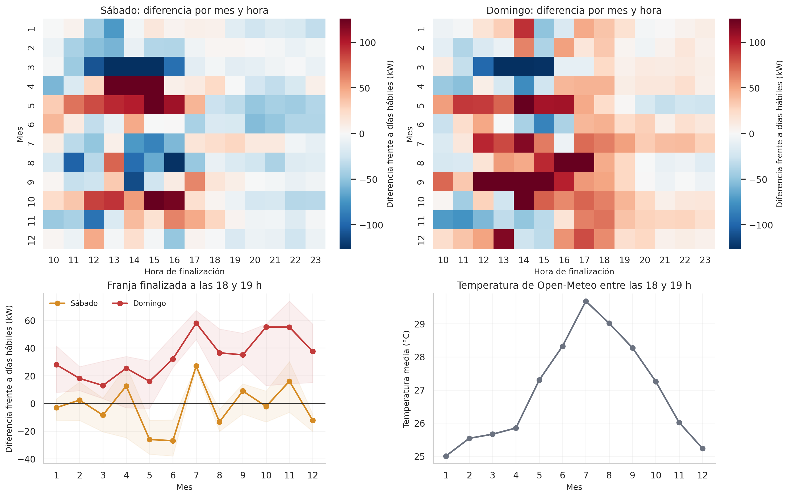
Nota. Los paneles inferiores resumen las horas de finalización 18 y 19 y la temperatura media mensual en esa franja.
Fuente: elaboración propia con datos de JPS y Open-Meteo.
Temperatura y diferencias entre tipos de día
La comparación mensual se complementó examinando la demanda de días hábiles, sábados y domingos en rangos comunes de temperatura. Para cada fecha se calcularon la temperatura media y la demanda neta media en tres franjas: 06–09, 12–15 y 18–21 h. Dentro de cada franja se dividieron las temperaturas en cinco intervalos según los quintiles del conjunto de días, utilizando los mismos límites para los tres tipos de día. Se representaron la mediana y el rango intercuartílico de la demanda en cada grupo, junto con la diferencia entre las medianas del sábado o domingo y la de los días hábiles. Se exigieron al menos cinco fechas de cada tipo dentro de cada intervalo.
La Figura S1.9 muestra que las diferencias entre tipos de día no son constantes a lo largo de esos rangos. Por la mañana, la separación respecto de los días hábiles es mayor en el intervalo de menor temperatura y se reduce en los más cálidos. En la franja de tarde-noche, el nivel de demanda aumenta en términos generales con la temperatura, pero las diferencias del sábado y del domingo no siguen una trayectoria monótona. Al mediodía, la dispersión es mayor y la señal combina cambios del consumo con la generación fotovoltaica, por lo que no resulta adecuado interpretar las diferencias como una respuesta térmica del consumo.
La relación descriptiva entre temperatura y demanda cambia según el tipo de día. Esta observación motiva evaluar interacciones entre la temperatura y los indicadores de sábado y domingo; su aporte al pronóstico se determina mediante la validación temporal del Capítulo 4.
Figura S1.9. Demanda neta media y diferencias entre tipos de día en rangos térmicos comunes.
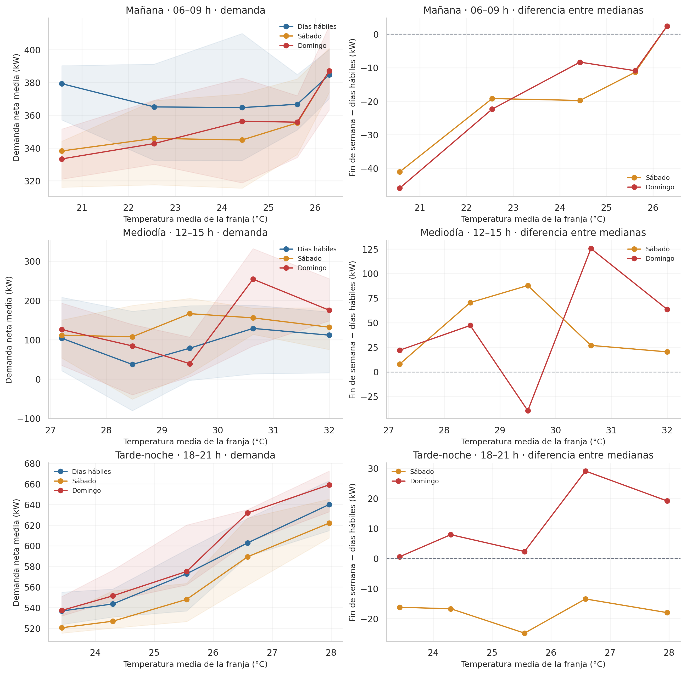
Nota. Cada observación corresponde al promedio de una fecha en una franja de tres horas. Izquierda: medianas y rangos intercuartílicos de demanda; derecha: diferencias entre las medianas de cada tipo de fin de semana y de los días hábiles dentro del mismo intervalo térmico. La posición horizontal es la mediana de temperatura del conjunto de días de ese intervalo. Las líneas conectan resúmenes, no curvas ajustadas; las bandas representan dispersión entre días, no intervalos de confianza.
Fuente: elaboración propia con datos de JPS y Open-Meteo.
S1.5 Asociaciones meteorológicas y calendario
La Figura S1.10 organiza los promedios por mes y hora en dos comparaciones. En la primera fila, la reducción diurna de la demanda neta del grupo de hogares con paneles identificados se presenta junto con el aumento de GHI. En la segunda, la demanda del grupo de hogares sin paneles identificados se compara con la temperatura: ambas muestran cambios de nivel durante el año, aunque sus máximos diarios no ocurren necesariamente a la misma hora. Estas vistas permiten reconocer estructuras temporales compartidas, pero no separar el efecto meteorológico de los patrones de calendario. La evaluación conjunta de las covariables se realiza mediante validación temporal.
Figura S1.10. Patrones mensuales y horarios de demanda y meteorología.
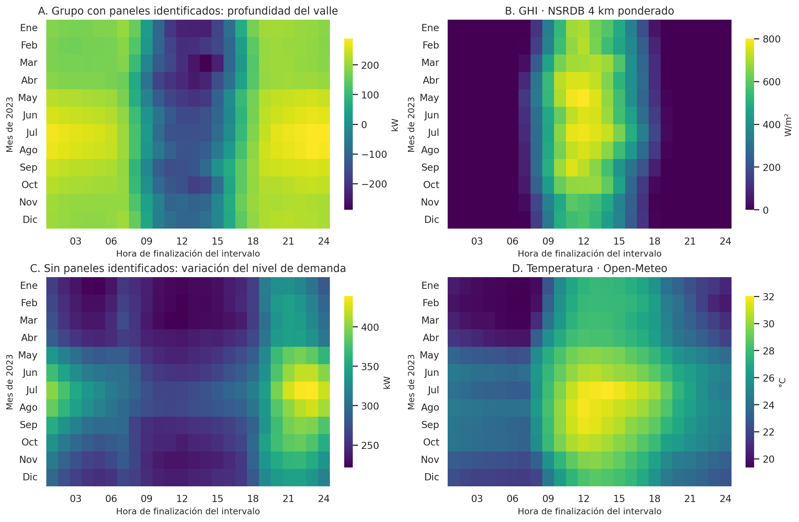
Nota. Arriba se comparan la demanda de los hogares con paneles identificados y GHI; abajo, la de los hogares sin paneles identificados y la temperatura. Cada casillero representa el promedio de las observaciones del mismo mes y hora. Los paneles tienen escalas y unidades propias: un mismo color no representa la misma magnitud entre paneles. La hora 24 identifica el cierre de la última hora del día.
Fuente: elaboración propia con datos de JPS, NSRDB y Open-Meteo.
S1.6 Contrastes meteorológicos dentro del área
La Figura S1.11 muestra tres días próximos a los percentiles 10, 50 y 90 de la diferencia absoluta media diurna, para observar cómo se distribuyen esas discrepancias dentro del día. Cada panel conserva una escala compartida entre las dos curvas. La comparación motiva evaluar ambas representaciones mediante validación temporal.
Figura S1.11. Comparación de las trayectorias solares en tres días.
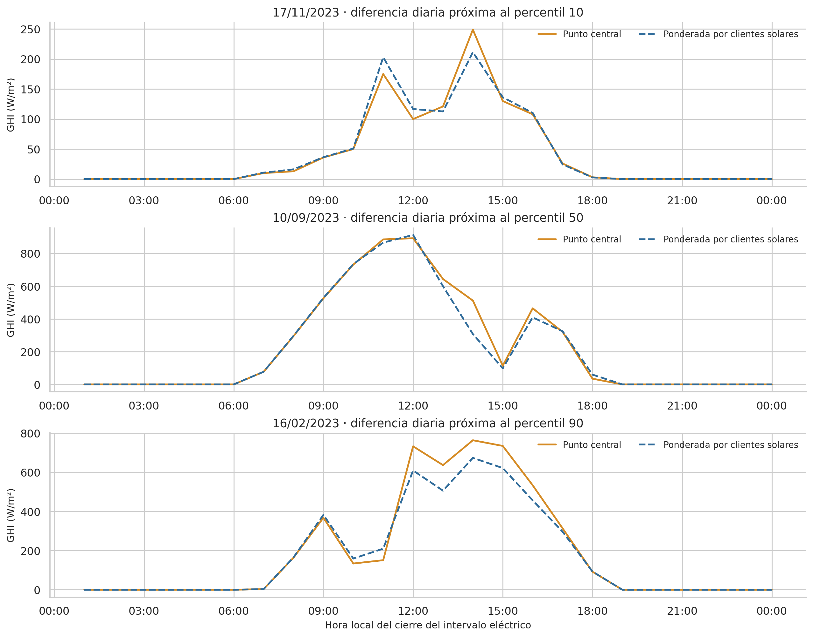
Nota. Se superponen la GHI del punto central y la GHI ponderada por hogares con paneles identificados. Los días corresponden a contrastes diarios próximos a P10, P50 y P90, según el criterio descrito en el texto. El eje horario indica el cierre del intervalo eléctrico al que se asocia cada registro solar.
Fuente: elaboración propia con datos de NSRDB.
El tipo de nube se representa mediante la proporción ponderada de cada categoría en cada hora. Una misma hora puede reunir condiciones diferentes entre los puntos del área; esa diversidad se conserva mediante las proporciones. La Figura S1.12 resume su composición durante las horas solares y su variación mensual. Los números identifican categorías del producto, sin representar una escala ordenada de nubosidad. Esta información complementa las magnitudes de irradiancia, aunque su aporte predictivo depende del modelo y de las demás entradas.
Figura S1.12. Composición nubosa ponderada durante las horas solares.
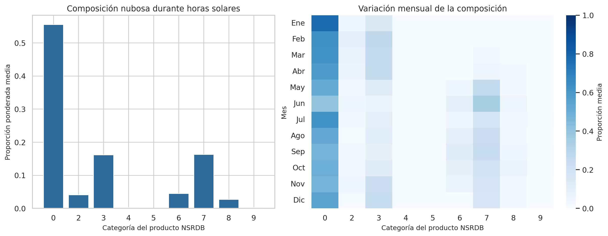
Nota. Izquierda: promedio anual de las proporciones por categoría; derecha: sus promedios mensuales. Cada proporción se calcula con los mismos pesos geográficos de las variables solares. Se muestran las categorías presentes en el período.
Fuente: elaboración propia con datos de NSRDB.
Contrastes espaciales de irradiancia y demanda
Las diferencias entre la GHI del punto central y la GHI ponderada pueden examinarse a través de las zonas asociadas a los siete puntos meteorológicos. Para cada zona se sumó la demanda neta de sus hogares con paneles identificados y se dividió por su cantidad de hogares. Las curvas resultantes, en kW por hogar, permiten comparar la demanda y la irradiancia de zonas de distinto tamaño. Los hogares de cada zona conservan sus características de consumo e instalación fotovoltaica.
El ejemplo se seleccionó a partir de la meteorología. Entre los pares de zonas con al menos veinte hogares con paneles identificados en cada una, se eligió el de mayor percentil 90 de la diferencia absoluta horaria de GHI. El mínimo de hogares es una regla descriptiva para ilustrar grupos y reducir la influencia de perfiles individuales. Se consideraron horas con GHI de cielo despejado de al menos 200 W/m² en ambas zonas, para concentrar la comparación en condiciones de disponibilidad solar apreciable. Este procedimiento seleccionó Z3 y Z4, que reúnen 89 y 50 hogares, respectivamente.
Una vez fijado el par, se calculó un contraste diario: para cada día de 2023 se promediaron las diferencias absolutas de GHI entre ambas zonas durante las horas que satisfacen ese criterio. El percentil 90 de los 365 contrastes diarios fue 122,18 W/m². Esto significa que aproximadamente el 90 % de los días presentó una diferencia media menor que ese valor. Se eligió el día más cercano a ese percentil, el 14 de junio, cuyo contraste medio fue 122,30 W/m². La Figura S1.13 presenta ese día de contraste espacial alto.
Para interpretar las curvas se calculó, por separado para cada zona y cada variable, la media correspondiente a la misma combinación de mes, hora y tipo de día. A cada observación se le restó esa media de 2023. Las desviaciones indican cuánto se apartan la irradiancia y la demanda de sus valores habituales en ese contexto. En estas figuras, el eje horario identifica el inicio del intervalo eléctrico; la GHI corresponde a su punto medio.
Figura S1.13. Contraste espacial de irradiancia y demanda el 14 de junio de 2023.
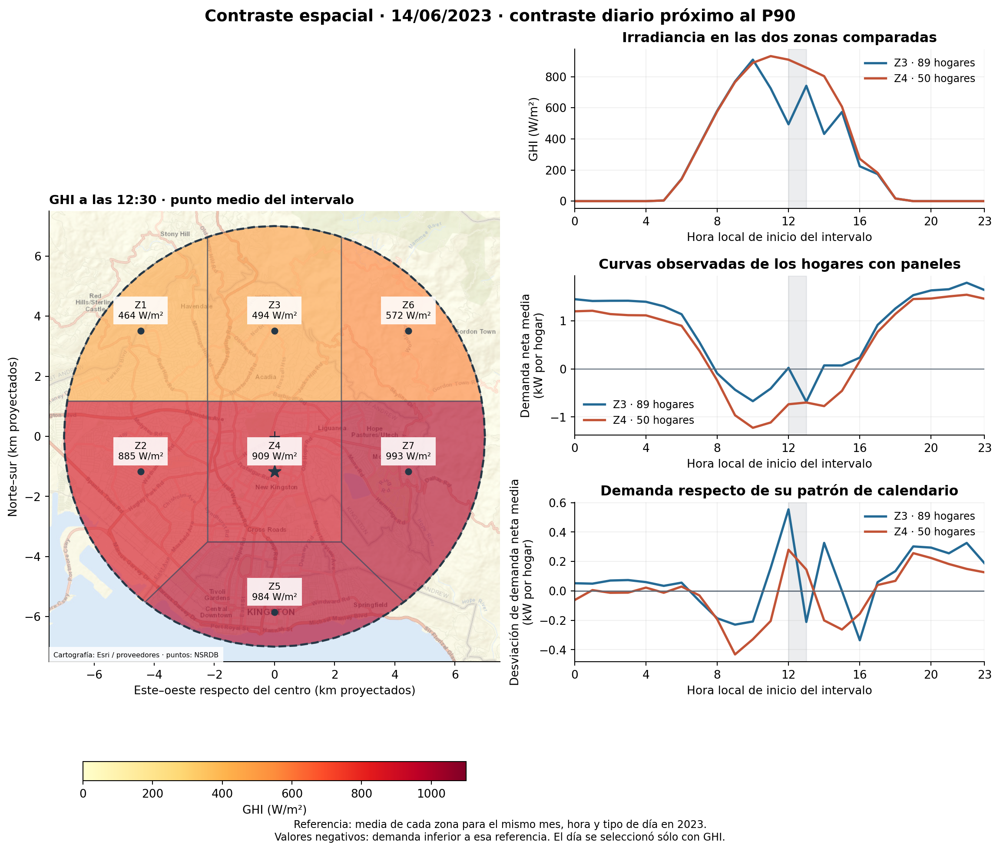
Nota. El eje de las curvas indica el inicio del intervalo: 0 corresponde a 00:00–01:00 y 23 a 23:00–24:00. El mapa muestra la GHI de las 12:30, asociada al intervalo eléctrico de 12:00 a 13:00. A la derecha se presentan las trayectorias de GHI, la demanda neta media por hogar y su desviación respecto de la referencia de calendario para Z3 y Z4. La franja sombreada identifica ese intervalo.
Fuente: elaboración propia con datos de JPS y NSRDB; cartografía de Esri World Street Map.
La figura permite leer tres aspectos del mismo episodio. La trayectoria de GHI muestra cuándo se separan las condiciones meteorológicas de las dos zonas; la demanda observada muestra el intercambio neto de sus hogares; y la desviación permite comparar ese intercambio con el patrón habitual de cada zona. En el intervalo destacado, la GHI fue de 494 W/m² en Z3 y 909 W/m² en Z4. La demanda neta media fue aproximadamente 0,024 kW por hogar en Z3 y −0,734 kW por hogar en Z4. Mientras el agregado de Z3 se encontraba próximo al equilibrio entre importación y exportación, el de Z4 presentaba exportación neta. Esta coincidencia es compatible con una mayor contribución fotovoltaica en la zona más soleada.
Las desviaciones respecto de la referencia de calendario fueron positivas en ambas zonas: aproximadamente 0,55 kW por hogar en Z3 y 0,28 kW por hogar en Z4. El valor negativo de la demanda de Z4 y su desviación positiva expresan aspectos diferentes: en esa hora sus hogares exportaron energía en términos netos, pero la demanda quedó por encima de la media correspondiente a ese mes, hora y tipo de día. En ese intervalo, Z4 presentó mayor irradiancia y una desviación de demanda menor que Z3. Esta asociación se examina a continuación con el conjunto del año.
Para examinar la relación durante el año se compararon, en cada hora, las diferencias entre las desviaciones meteorológicas y eléctricas de las dos zonas. Si es la desviación de GHI y la desviación de demanda neta media por hogar en la zona , los contrastes entre las zonas y son:
El subíndice identifica la misma hora en las dos zonas. Los símbolos y representan, respectivamente, el contraste de irradiancia en W/m² y el de demanda neta en kW por hogar.
En Z3–Z4, la correlación de Spearman entre ambos contrastes fue −0,521 sobre las 3.489 horas que satisfacen el criterio de disponibilidad solar. En el panel izquierdo de la Figura S1.14, desplazarse hacia la derecha significa que la desviación de GHI es relativamente mayor en Z3 que en Z4. La tendencia descendente de las medianas indica que esas condiciones tienden a acompañarse de una desviación de demanda relativamente menor en Z3. La amplitud del rango intercuartílico muestra la dispersión de las respuestas eléctricas dentro de cada grupo de contrastes meteorológicos. La correlación resume una asociación de rangos, no una proporción de variación explicada.
La matriz del panel derecho amplía la comparación a todos los pares de zonas. Las asociaciones fueron negativas y variaron aproximadamente entre −0,13 y −0,52. El signo compartido es compatible con la contribución fotovoltaica a la demanda neta; las intensidades diferentes muestran que esa relación es heterogénea dentro del área. La expresión por hogar y la referencia de calendario facilitan la comparación, pero persisten diferencias de consumo bruto, potencia instalada, orientación y sombreado. Además, los pares comparten zonas y observaciones, por lo que no constituyen comprobaciones independientes. El análisis motiva considerar la distribución espacial del recurso solar; su aporte al pronóstico se evalúa posteriormente mediante el protocolo temporal.
Figura S1.14. Relación entre contrastes espaciales durante 2023.
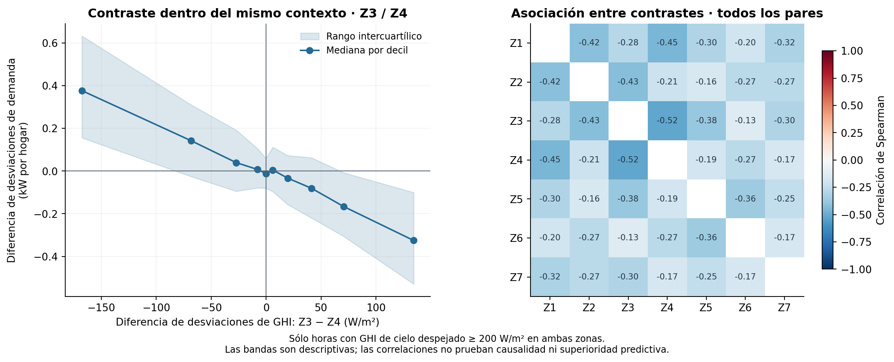
Nota. Izquierda: medianas de la diferencia de desviaciones de demanda por decil de la diferencia de desviaciones de GHI para Z3–Z4; la banda representa el rango intercuartílico. Derecha: correlaciones de Spearman para todos los pares de zonas. Las correlaciones se calculan sobre las observaciones horarias, no sobre las medianas de los deciles. Se incluyen las zonas con grupos pequeños para mostrar la heterogeneidad del conjunto. Las horas y los pares comparten dependencia temporal y espacial; los valores se interpretan descriptivamente.
Fuente: elaboración propia con datos de JPS y NSRDB.
La secuencia de cinco días que relaciona la irradiancia con la demanda de ambos grupos y del agregado se presenta en la Sección 3.9.6 del capítulo 3 (Figura 3.12).
S1.7 Dependencia temporal y descomposición
La función de autocorrelación (ACF) describe la asociación lineal entre valores de la serie separados por un rezago (Hyndman & Athanasopoulos, 2021). Se calculó hasta 336 horas, con ampliaciones de los primeros tres días y del entorno de una semana.
En la serie original, la ACF presenta máximos recurrentes cada 24 horas: alcanza 0,917 a un día y 0,885 a una semana. Sin embargo, 168 también es múltiplo de 24. Por tanto, la correlación semanal elevada puede recoger la repetición diaria y no demuestra, por sí sola, una estructura semanal adicional.
Para examinar esa diferencia se restó a cada observación el promedio de demanda de su mismo mes y hora. Este ajuste retira un perfil diario que cambia entre meses, sin incluir el día de la semana. Después del ajuste, la ACF a 24 horas fue 0,234 y a 168 horas, 0,006 (Figura S1.14a). Permanece una asociación diaria moderada, mientras que la relación lineal con la misma hora de la semana anterior se reduce considerablemente. El ajuste es retrospectivo y no garantiza estacionariedad.
Figura S1.14a. ACF de la demanda neta media horaria.
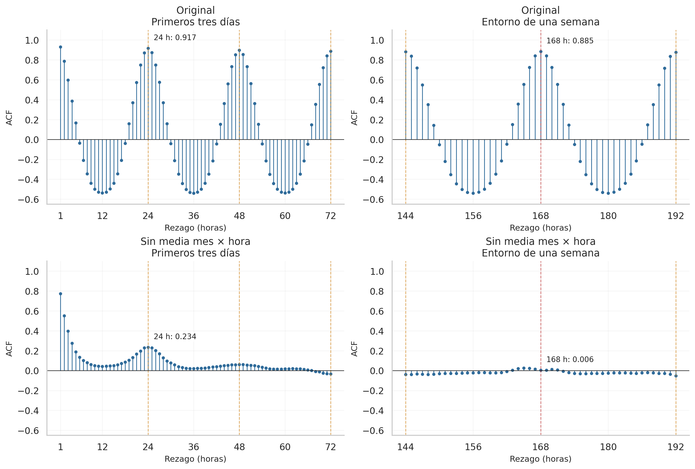
Nota. Arriba se presenta la serie original; abajo, las desviaciones respecto de la media por mes y hora, sin descontar el día de la semana. Las cuatro vistas conservan la misma escala vertical. Las líneas discontinuas señalan múltiplos de 24 horas y destacan el rezago semanal.
Fuente: elaboración propia con datos de JPS.
Para describir por separado la evolución del nivel y las recurrencias se aplicó MSTL (Multiple Seasonal-Trend decomposition using Loess), que estima iterativamente varias componentes estacionales mediante ajustes STL (Bandara et al., 2025). Se especificaron períodos de 24 y 168 horas, correspondientes a los ciclos diario y semanal, con dos iteraciones y ajuste robusto. La descomposición aditiva es:
donde es la demanda neta observada del agregado y representa la tendencia, la componente diaria, la componente semanal adicional y el residuo. El subíndice identifica la hora de la serie. Se utilizó una descomposición aditiva en la escala original de la demanda, que admite valores negativos asociados con exportación neta.
Figura S1.15. Descomposición aditiva MSTL en la semana del 26 de junio al 2 de julio.
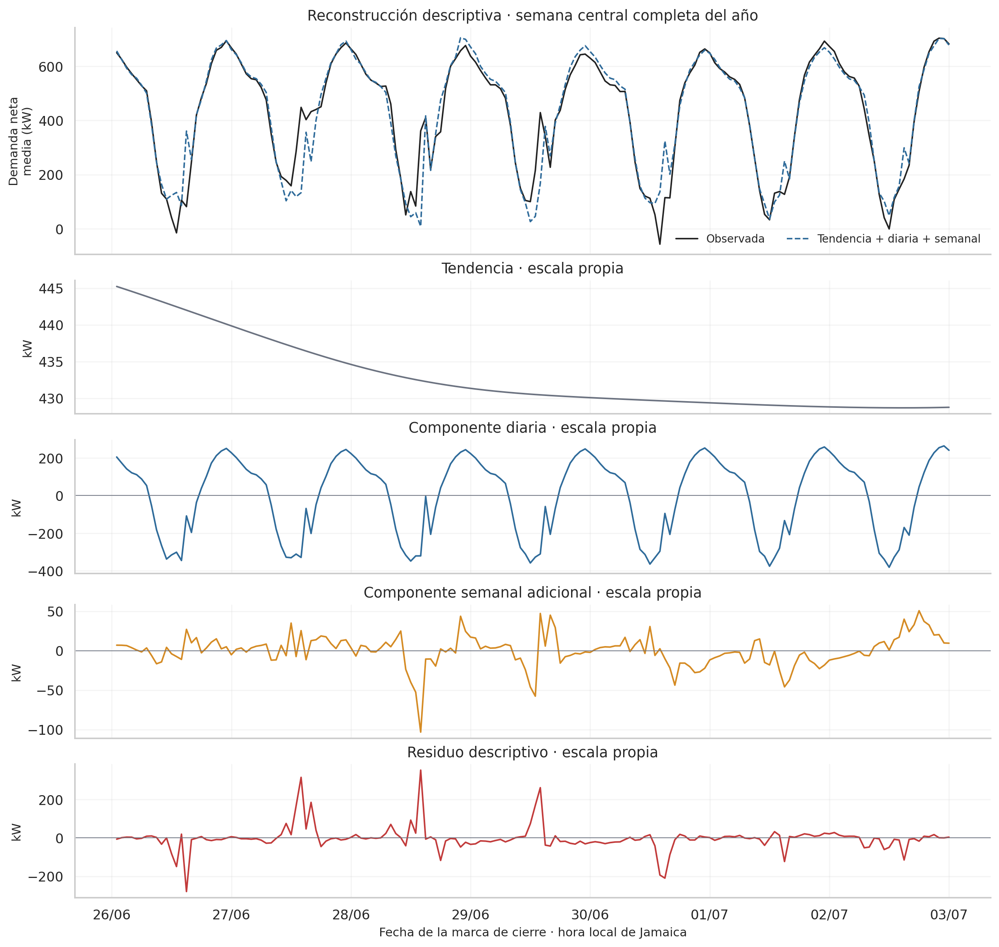
Nota. Arriba, la curva negra continua representa la demanda observada y la azul discontinua, la suma de tendencia y componentes diaria y semanal. Debajo se muestran las cuatro componentes con escalas propias. La suma de todas ellas, incluido el residuo, reconstruye la observación. El último intervalo del domingo finaliza a las 00:00 del lunes.
Fuente: elaboración propia con datos de JPS.
La componente diaria tiene mayor amplitud que la semanal adicional. Para resumir su escala se calculó la raíz del promedio de sus valores al cuadrado:
El símbolo denota la raíz del promedio de cuadrados. Aquí es la cantidad de horas de 2023, identifica cada hora y es la componente estacional del período , expresada en kW. El resultado fue 196,5 kW para la componente diaria y 23,2 kW para la semanal: la primera presenta oscilaciones de mayor magnitud. La componente semanal recoge variaciones recurrentes adicionales al patrón diario y a la tendencia. En la Figura S1.16, un valor negativo durante la mañana del fin de semana indica que esa componente reduce la demanda reconstruida respecto de la suma de tendencia y patrón diario; un valor positivo durante la tarde del domingo la eleva. Su magnitud representa una contribución aditiva en kW.
Figura S1.16. Componente semanal adicional y dependencia del residuo.
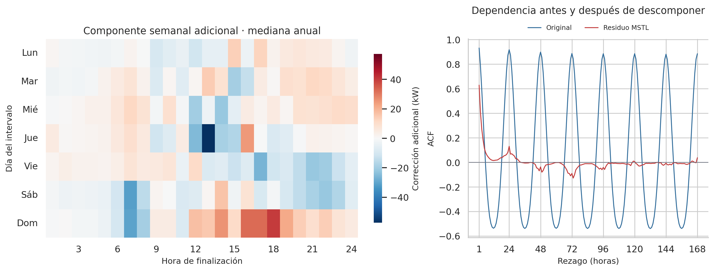
Nota. Izquierda: mediana anual de la componente semanal para cada día y hora; rojo indica una corrección positiva, azul una negativa y blanco un valor cercano a cero. Derecha: la curva azul muestra la ACF de la demanda observada; la roja, la ACF del residuo que queda al restar tendencia y ambas componentes estacionales. Se omite el rezago cero. El mapa resume el año y no supone que la componente semanal sea constante en el tiempo.
Fuente: elaboración propia con datos de JPS.
El residuo conserva dependencia entre horas próximas; su ACF fue 0,130 a 24 horas y 0,037 a 168 horas. A continuación se examina su dispersión según la hora y la disponibilidad solar. Este componente procede de una descomposición descriptiva del año completo. Para comparar su distribución horaria en el escenario completo y en el grupo de hogares sin paneles identificados, cada residuo se dividió por su propia desviación estándar anual. La dispersión estandarizada del agregado alcanza su máximo en la hora de finalización 14, mientras que en el grupo de hogares sin paneles identificados lo hace a las 23 (Figura S1.17). La normalización permite comparar la forma horaria de la dispersión, sin confundirla con la escala de grupos de distinto tamaño.
En el escenario completo, la mediana del valor absoluto del residuo fue 19,0 kW durante horas con irradiancia potencial de al menos 20 W/m² y 10,4 kW en las restantes. La raíz del promedio de cuadrados fue 87,6 y 21,4 kW, respectivamente. La diferencia más marcada en esta segunda medida muestra la importancia de episodios residuales de gran magnitud durante el día. El patrón es compatible con una contribución meteorológica a la variabilidad, pero no separa por sí solo la generación fotovoltaica del consumo ni identifica todas las causas del remanente.
Figura S1.17. Distribución temporal del residuo MSTL.
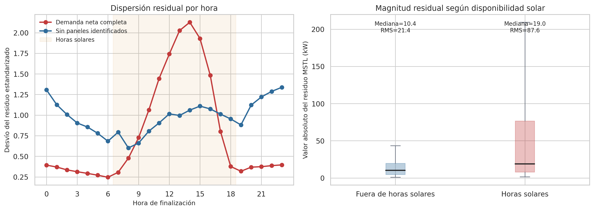
Nota. Izquierda: desviación estándar por hora de los residuos normalizados por su desviación anual. Derecha: magnitud absoluta del residuo del escenario completo, separada por disponibilidad solar potencial. Las cajas representan rangos intercuartílicos y los extremos los percentiles 5 y 95.
Fuente: elaboración propia con datos de JPS y NSRDB.
Finalmente se estudió la evolución diaria del nivel, la amplitud P10–P90 dentro de cada día y la cantidad de horas con demanda neta negativa. La Figura S1.18 incorpora medianas móviles retrospectivas de 28 días para distinguir los cambios sostenidos de las fluctuaciones diarias. Se observa un aumento del nivel hacia la mitad del año y una reducción de la amplitud intradiaria hacia su final. Las horas negativas tienen una presencia más persistente durante parte de los primeros meses.
La amplitud dentro de un día combina la forma diaria y las variaciones de ese día; es diferente de la dispersión entre días para una misma hora representada en la Figura 3.13. Ambas muestran que los períodos mensuales de evaluación corresponden a contextos distintos. Esta evidencia respalda examinar el desempeño a lo largo del tiempo, sin interpretar un único mes como resumen de todas las condiciones de 2023.
Figura S1.18. Evolución del nivel diario, la amplitud intradiaria y las horas con demanda neta negativa.
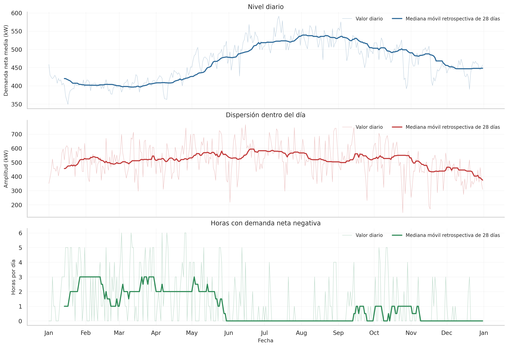
Nota. Las líneas finas muestran los valores diarios; las gruesas, la mediana de los últimos 28 días, calculada cuando se dispone de al menos catorce. Cada resumen diario se obtiene de las veinticuatro observaciones horarias.
Fuente: elaboración propia con datos de JPS.
S1.8 Completitud y controles de 2023
La inclusión exigió registros completos en 2023 y enero de 2024 y que la importación de enero no fuera nula durante todo el mes. El Cuadro S1.2 resume las cantidades finales. Entre los 2.611 clientes sin paneles con 2023 completo, 17 presentaron faltantes en enero y 39 tuvieron todas sus lecturas de importación y exportación en cero; entre los 210 con paneles y 2023 completo, las cantidades fueron uno y uno. Los registros completos en cero se distinguen de los faltantes. El resto de los criterios de tipología y disponibilidad determina los 204 hogares con paneles del escenario.
Cuadro S1.2. Conformación del conjunto de clientes con mediciones completas.
| Grupo | Etapa | Clientes | Criterio |
|---|---|---|---|
| Hogares sin paneles identificados | Clientes elegibles | 2.555 | Residenciales del recorte, con mediciones completas en ambos períodos y sin solapamiento con el grupo de hogares con paneles identificados |
| Hogares sin paneles identificados | Submuestra seleccionada | 800 | Ajuste de la distribución del promedio mensual de importación |
| Hogares con paneles identificados | Clientes residenciales disponibles | 221 | Resultado de la depuración de tipologías |
| Hogares con paneles identificados | Clientes seleccionados | 204 | Registros completos en ambos períodos |
| Escenario final | Total de clientes | 1.004 | Composición común para 2023 y enero de 2024 |
Fuente: elaboración propia con datos de JPS.
La disponibilidad y la condición de importación de enero intervienen en la inclusión. El ajuste distribucional de la submuestra y el EDA se calculan con 2023. Para febrero–abril se utiliza el subconjunto de los hogares seleccionados con registros disponibles en cada mes.
Los controles de valores extremos de 2023 y sus efectos se presentan en la Sección S1.2.
S1.9 Representaciones central y ponderada de GHI
La GHI del punto de NSRDB más próximo al centro del área y la GHI combinada de los siete puntos, ponderada por cantidad de hogares con paneles identificados, comparten buena parte de su evolución. Durante las horas diurnas, su correlación de Spearman fue 0,982. La diferencia absoluta media entre ambas fue de 33,2 W/m² y el percentil 95 de esa diferencia alcanzó 141,9 W/m². Estos valores cuantifican cuánto cambia la representación de la irradiancia al incorporar la distribución espacial de los hogares.
La Figura S1.19 representa la GHI ponderada menos la GHI del punto central durante las horas diurnas. Un valor negativo indica que la representación ponderada es menor. Al resumir por mes, las medianas permanecen próximas a cero, entre −5,2 y 1,2 W/m². Sin embargo, el resumen por hora muestra una diferencia sistemática alrededor del mediodía: las medianas son −39,4 y −40,3 W/m² para los intervalos que finalizan a las 13:00 y a las 14:00. Las bandas P10–P90 muestran además una dispersión amplia entre días. Por lo tanto, la similitud de las medianas mensuales reúne horas con diferencias distintas y no implica coincidencia de las trayectorias.
Figura S1.19. Diferencias entre las representaciones ponderada y central de GHI.
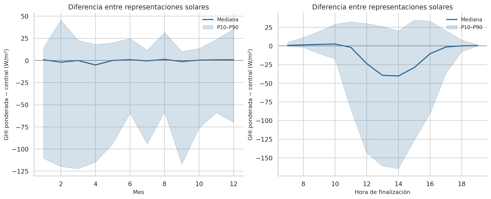
Nota. Se muestran la mediana y los percentiles 10 y 90 de la diferencia horaria, por mes y por hora de finalización. Un valor negativo indica menor irradiancia en la representación ponderada. Se consideran las horas con GHI de cielo despejado de al menos 20 W/m² en alguna de las dos representaciones.
Fuente: elaboración propia con datos de NSRDB y la distribución de hogares con paneles identificados.
La Sección S1.6 presenta la composición nubosa y los contrastes entre zonas; la Figura 3.12 ilustra la relación entre irradiancia y demanda en cinco días consecutivos.
S1.10 Referencia geográfica
Las coordenadas provistas por JPS estaban expresadas en JAD2001 / Jamaica Metric Grid, identificado como EPSG:3448. Se transformaron a WGS84, EPSG:4326, para representar las ubicaciones mediante latitud y longitud. El área de estudio se delimitó alrededor del punto aproximado 18,02° N y 76,78° O, en Kingston, mediante un radio nominal de 7 km implementado como una zona circular de 7.000 m en la proyección EPSG:3857. Esa longitud es una distancia en la proyección, no un radio geodésico exacto sobre la superficie terrestre. El mismo recorte se aplicó a ambos grupos.
S1.11 Evolución anual y detalle semanal
La Figura S1.20 presenta la evolución durante el año completo y amplía dos tramos de siete días consecutivos, de lunes a domingo. En estas ampliaciones se separan las contribuciones aditivas del grupo de hogares sin paneles identificados y del grupo de hogares con paneles identificados, cuya suma forma la demanda del escenario. Las semanas se seleccionaron según la variabilidad de un indicador diario de disponibilidad solar: el cociente entre la suma de GHI y la suma de GHI de cielo despejado durante las horas solares. Se eligieron las semanas cuya desviación estándar de ese indicador era más próxima a los percentiles 25 y 75 de la distribución semanal. El criterio produjo los períodos del 27 de febrero al 5 de marzo y del 20 al 26 de noviembre.
En ambas se reconoce que la profundidad del valle del agregado depende especialmente de la contribución neta del grupo de hogares con paneles identificados. Su variación entre días convive con cambios en el grupo de hogares sin paneles identificados. Las semanas pertenecen a momentos diferentes del año: la figura ilustra comportamientos observados sin aislar el efecto meteorológico de las demás condiciones.
Figura S1.20. Evolución anual y detalle semanal de la demanda neta media.
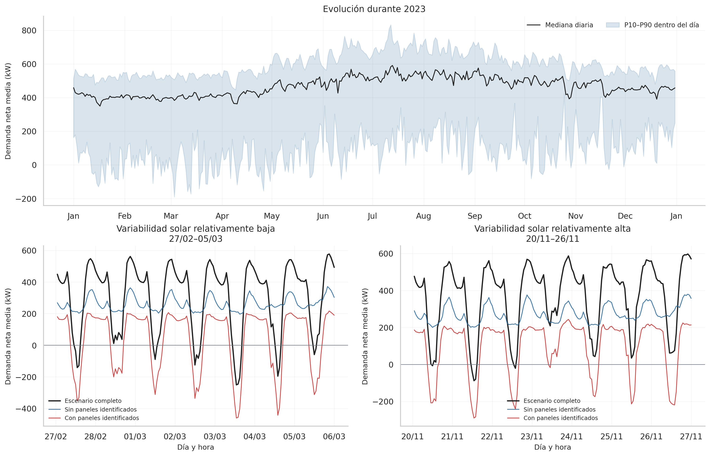
Nota. Arriba se presentan la mediana y los percentiles 10 y 90 dentro de cada día. Abajo se separan las contribuciones de los grupos en semanas seleccionadas por su variabilidad solar relativa. La banda anual resume dispersión intradiaria, no incertidumbre predictiva.
Fuente: elaboración propia con datos de JPS y NSRDB.